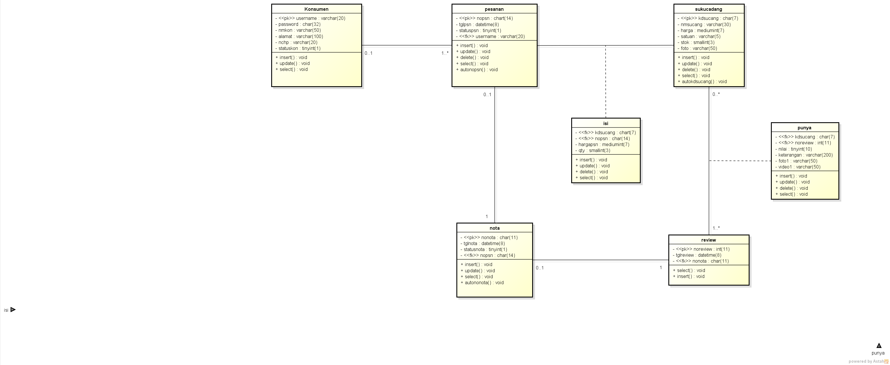

Berisi saduran pada pertemuan ke 6:
1) class diagram menggambarkan hubungan antar class atau hubungan antar tabel
2) membuat class diagram pada astah
3) membuat file ERD berbentuk word
4) class diagram representasi lain Entity Relationship Diagram(ERD)
download file word class diagram disini
